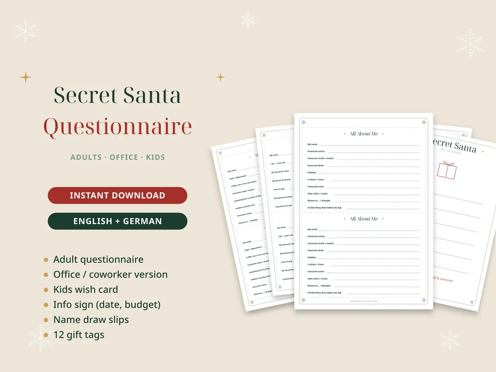

Wichteln: Regeln, Würfelspiel und Ideen für die Weihnachtsfeier

Wichteln bringt Schwung in jede Weihnachtsfeier – egal ob mit Kollegen, Familie oder im Freundeskreis. Hier sind die drei beliebtesten Varianten mit Regeln, die sofort funktionieren.
1. Klassisches Wichteln (geheimer Wichtel)
- Alle Namen auf Lose schreiben, jede Person zieht einen Namen – geheim.
- Budget festlegen: 10 bis 15 Euro sind im Büro üblich, in der Familie gern etwas mehr.
- Jede Person füllt einen kurzen Steckbrief aus: Lieblingsdinge, „Bitte nicht…“, Allergien. So trifft das Geschenk.
- Bei der Feier werden die Geschenke verteilt – mit Anhänger „Von deinem Wichtel“.
2. Schrottwichteln mit Würfeln
Jede Person bringt ein eingepacktes Geschenk mit – gern etwas Kurioses aus dem Keller. Alle Päckchen liegen in der Mitte.
- Runde 1: Reihum wird gewürfelt. Bei einer 6 nimmst du dir ein Päckchen aus der Mitte. Die Runde endet, wenn die Mitte leer ist.
- Runde 2: Eine Eieruhr läuft (5 bis 10 Minuten, verdeckt). Jetzt bedeutet jede Zahl eine Aktion, zum Beispiel: 1 = mit dem linken Nachbarn tauschen, 2 = mit dem rechten tauschen, 3 = alle Päckchen wandern eins nach links, 4 = aussetzen, 5 = ein Päckchen von jemandem klauen, 6 = noch mal würfeln.
- Wenn die Uhr klingelt, wird ausgepackt. Was vor dir liegt, gehört dir.
Mit Ereigniskarten („Klaue das größte Geschenk“, „Richtungswechsel!“) wird es noch chaotischer – ideal für größere Gruppen.
3. Die Rechts-Links-Geschichte
Alle sitzen im Kreis, jede Person hält ein Geschenk. Jemand liest eine Geschichte vor. Bei jedem „rechts“ wandern die Päckchen nach rechts, bei jedem „links“ nach links. Am Ende behält jede Person das Päckchen in ihrer Hand. Tipp: Die Wörter farbig markieren, dann verliest sich niemand.
Wichteln im Büro: 5 Tipps
- Teilnahme freiwillig machen – und früh fragen (mindestens 2 Wochen vorher).
- Budget klar festlegen und auf ein Infoblatt schreiben, zusammen mit Datum, Ort und Abgabefrist.
- Steckbriefe einsammeln, damit niemand Alkohol oder Süßes bekommt, das er nicht mag.
- Remote-Kollegen? Online-Losen und Versand nach Hause einplanen.
- Beim Schrottwichteln die Regel „nichts Peinliches“ vorher ansagen.
Alles fürs Wichteln zum Ausdrucken
Wichtel-Set: Würfelspiel, Ereigniskarten, Rechts-Links-Geschichte
13 Seiten: Spielregeln für 2 Runden, Würfeltabelle, 24 Ereigniskarten, Rechts-Links-Geschichte, 3 Steckbriefe (Erwachsene, Büro, Kinder), Lose, 12 Geschenkanhänger und Zahlenkarten – für 3 bis 30 Personen.
Ansehen auf Etsy
Wichtel-Steckbrief
Nur die Steckbriefe: Erwachsene, Büro und Kinder, dazu Infoblatt, Lose und Anhänger – für 1,90 €.
Ansehen auf EtsyDas brauchst du noch
Werbung: Die Links führen zu Amazon (Affiliate-Links). Als Amazon-Partner verdiene ich an qualifizierten Verkäufen. Für dich ändert sich der Preis nicht.